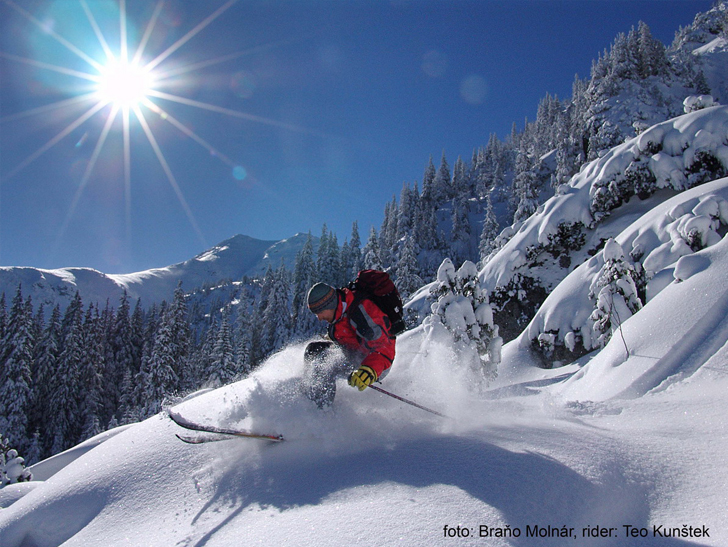
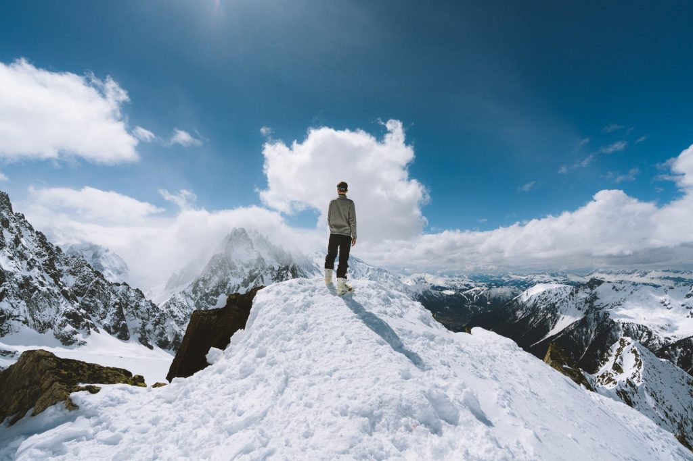

Slidinėjimas
2020.10.30 03:16
Slidinėjimas
2012 m. lapkričio 27 d., antradienis
Tinklalapio pristatymas
Slidinėjimas yra žiemos sportas, populiarus daugelyje šalių, kur būna sniego. Tai Šiaurės Europa bei Alpių šalys, Kanada ir JAV. Slidinėjimas priklauso slidžių sporto šakai, kuriai priklauso šuoliai su slidėmis, ir slidinėjimo bei šuolių su slidėmis kombinacija, pavadinta šiaurės dvikovė. Slidinėjimas sudaro ir dalį biatlono rungties, kuriame prie slidinėjimo prisideda ir šaudymas. Kaip sportas, slidinėjimas yra vienas iš sudėtingiausių ištvermės sportų, ir tai yra vienas iš sportų, kurių metu deginama daugiausia kalorijų per valandą. Šiuolaikinis slidinėjimas patiria revoliuciją, nes vis daugiau varžybų yra vykdomos auditorijai pritaikytais formatais, tokiais kaip masinis startas, sprintas, estafetės ir persekiojimas.Taip pat slidinėjimas yra paplitęs ir sporto pasaulyje ir vyksta daug varžybų. Žiemą vykstra Tarptautinės Slidinėjimo Federacijos (FIS) rengiami pasaulio Slidinėjimo Čempionatai, bei FIS Pasaulio taurės varžybos.Taip pat vyksta ir labai ilgų nuotolių slidinėjimo varžybų, vadinamų slidinėjimo maratonais.Pranešimą parašė Gabrielė ties 12:02 Komentarų nėra: Siųsti el. paštu BlogThis! Bendrinti sistemoje „Twitter“ Bendrinti sistemoje „Facebook“ Bendrinti sistemoje „Pinterest“
Technikos mokymas
Jei čiuošite pirmą kartą, jums reikės instruktoriaus. Geriau nebandykite mokytis pats, o pasitreniruokite su juo bus ir greičiau, ir paprasčiau. Aišku, tai kainuos papildomai, tačiau visiškai pigiai ir smagiai slidinėti vargu ar pavyks, be to, mokydamiesi su instruktoriumi sutaupysite laiko, kurio ir taip nėra labai daug. Žinoma, pasiskaityti apie slidinėjimo technikas internete ir įgauti teorinių žinių tikrai nepakenks.Kai ieškosite trenerio, pasidomėkite, ar jis kalba ta pačia kalba kaip ir jūs, nes vėliau tai gali tapti nemaloniu siurprizu. Kai pirmuosius kartus čiuošite vienas, nepatingėkite atsikelti anksti ryte, kuomet dar nesusigulėjo ir nebuvo sulygintas per naktį iškritęs sniegas jis puikiai tinka besimokantiems. Beje, daugumoje kurortų yra įvesta speciali spalvų sistema. Tad jei esate pradedantieji, iš pradžių dairykitės žalia spalva pažymėtų nusileidimo trasų jos skirtos besimokantiems, yra lygios, tiesios, pasižyminčios nelabai stačiomis nuokalnėmis. Jose neišvystysite didelių greičių ir jos nebus ypatingai įdomios, bet jose įgausite slidinėjimo pagrindus. Galbūt visai netrukus jau jausitės pasiruošę pereiti prie mėlynai pažymėtų trasų, kurios yra skirtos pažengusiems. Raudona spalva pažymėtos trasos yra skirtos patyrusiems slidininkams, o juodai pažymėtos tik profesionalams. Slidininkai dažnai juokiasi, kad čiuožimas juodai pažymėtomis trasomis tampa darbu, o ne malonumu, ir juo labiau - ne poilsiu. Didžiausi adrenalino mėgėjai renkasi nebe trasas, o miškingus nuolydžius, kur ypatingu greičiu skriedami laviruoja tarp medžių. Tačiau čia blogai gali baigtis net menkiausia klaidelė, tad rekomenduotina rinktis išpuoselėtas slidinėjimo kurortų trasas.
Pranešimą parašė Gabrielė ties 12:02 Komentarų nėra: Siųsti el. paštu BlogThis! Bendrinti sistemoje „Twitter“ Bendrinti sistemoje „Facebook“ Bendrinti sistemoje „Pinterest“
Veiklos istorija
LietuvojeLietuvoje yra keletas slidinėjimo trasų, jos yra palyginti trumpos ir nesudėtingos, skirtos daugiausia poilsiniam slidinėjimui. Didžiausios slidinėjimo trasos yra Laimio kalnas ( Liepkalnis), Vilniuje Lietuvos žiemos sporto centre Ignalinoje, Birštone šalia Vytauto kalno, Alytuje bei Anykščiuose. Lietuvos kalnų slidinėjimo čempionatai dažniausiai vyksta Europos kalnų kurortuose.
Pasaulyje Slidinėjimas laisvu stiliumi prasidėjo 1930-aisiais, kai Norvegijos slidininkai
pradėjo demonstruoti akrobatikos elementus per kalnų slidinėjimo varžybas.
Vėliau profesionalių slidininkų atliekami slidinėjimo pasirodymai be konkurencijos JAV
demonstravo tai, kas vėliau tapo čiuožimu laisvu stiliumi.
Akrobatinis slidinėjimas išsyvystė apie 1950 metus.
Akrobatinis slidinėjimas vystėsi toliau 1960-aisiais ir į 1970-aisiais.
Kai kurie žmonės manė, kad šis slidinėjimo stilius yra pernelyg pavojingas ir nenorėjo, kad
akrobatinis slidinėjimas taptu olimpine sporto šaka. .
Laisvos formos sportas turėjo kelias taisykles ir kėlė pavojų;
kelio sužalojimai tapo bendru reiškiniu profesionaliems akrobatiniams slidininkams.
Tarptautinė Slidinėjimo Federacija (FIS) pripažino akrobatinį slidinėjimą kaip sportą 1979 metais
ir įvedė naujas taisykles dėl sportininkų ir šuolio technikos, kad suvaldytų pavojingus lenktynių
elementus.
Pranešimą parašė Gabrielė ties 12:02 Komentarų nėra: Siųsti el. paštu BlogThis! Bendrinti sistemoje „Twitter“ Bendrinti sistemoje „Facebook“ Bendrinti sistemoje „Pinterest“
Mokomoji medžiaga
LiteratūraSlidinėjimo asociacijos prezidento Pauliaus Augūno išleista mokomoji knyga „Kalnų slidinėjimas.
Vaizdinė medžiaga
http://www.youtube.com/watch?v=_2zESNSSckA&feature=fvwrel
http://www.youtube.com/watch?v=L3wPr3xC6TU Pranešimą parašė Gabrielė ties 12:01 Komentarų nėra: Siųsti el. paštu BlogThis! Bendrinti sistemoje „Twitter“ Bendrinti sistemoje „Facebook“ Bendrinti sistemoje „Pinterest“
Vieta, laikas.
Lietuviams artimiausios slidinėjimo trasos įrengtos Latvijoje ir Lenkijoje. Ten galima vykti kad ir savaitgaliui. Kiek toliau Čekija, Slovakija, Bulgarija. O galintys sau leisti tolimesnę ir ilgesnę kelionę geriausius kurortus atras Austrijoje, Šiaurės Italijoje, Prancūzijoje ar Šveicarijoje. Taip pat Lietuvoje , Ignalinoje įrengtos slidinėjimo trasos. Neseniai atsidariusi Snow arena taip pat siūlo slidinėjimo trasas uždaroje patalpoje, todėl galima mėgautis šiuo sportu bet kurio metų laiku. Pradėkime nuo artimiausiųjų. Prieš dešimtį metų, kai lietuviai slidinėdami Slovakijoje ar Čekijoje padėjo gerinti šių šalių slidinėjimo kurortų lygį, latviai rūpinosi savais kurortais. Dėl to dabar jie gali pasigirti gerai išplėtotu žiemos turizmu. Taip pat nes eniai atidaryta Snow arena Druskininkuose -tai pirmasis ištisus metus
veikiantis žiemos pramogų kompleksas Baltijos šalyse . 8 hektarų teritorijoje įrengtos 3 slidinėjimo trasos, skirtos kalnų slidinėjimui ir snieglenčių sportui. „Latvijoje yra net 30 normalių slidinėjimo kurortų. Ten į žiemos sportą žiūrima profesionaliai. Jei nėra sniego, jo paprasčiausiai pripurškiama. Vienintelis minusas nėra aukštų kalnų“, giria kaimynus Miroslavas. Kitas artimesnis kurortas yra Lenkijoje, maždaug 50 kilometrų atstumu nutolęs nuo Lietuvos ir Lenkijos sienos Goldapo miestelis. Jame yra kalnas Pienkna Gora, kuriam lietuviai slidininkai negaili gerų žodžių. Kiek toliau, prie Zakopanės miesto, yra žinomas kalnas Kasparowy Wierch. Kitas žinomesnis kurortas Ščyrkas, nuo Vilniaus nutolęs 800 kilometrų. Iki jo nuvykti pakanka dienos. „Lenkijoje slidinėjimo kokybė kiek prastesnė nei Vakarų valstybėse. Lauke nuolat tvyro smogas, atsirandantis dėl kūrenimo anglimis. Šią šalį lyginčiau su Slovakija, nors pastarosios kurortuose būna daug didesnės spūstys“, pasakoja sportininkas. Pranešimą parašė Gabrielė ties 12:01 Komentarų nėra: Siųsti el. paštu BlogThis! Bendrinti sistemoje „Twitter“ Bendrinti sistemoje „Facebook“ Bendrinti sistemoje „Pinterest“
Neįgaliųjų slidinėjimas
Slidinėjimas žmonėms su negalia tapo populiarus po Antrojo pasaulinio karo, kai gryžo sužaloti karo veteranai. Tai yra malonus laiko leidimas ir konkurencingas sportas, atidarytas tiems su bet kokiomis manieromis( žmonės po karo kitaip reguoja į nuopolius) ar fizine negalia. Neįgalieji turi specialę įranga( kadangi kai kurie negali vaikčioti),net gi ir aklieji gali slidinėt, tačiau jiems reikai turėti specialę klausimosi aparatūra, kad išgirstų trenerių nurodymus. Slidinėjimo programos žmonėms su negalia egzistuoja beveik visuose kalnuose per visą žemės rutulį.Pranešimą parašė Gabrielė ties 12:01 Komentarų nėra: Siųsti el. paštu BlogThis! Bendrinti sistemoje „Twitter“ Bendrinti sistemoje „Facebook“ Bendrinti sistemoje „Pinterest“
Testai
Dažniausia slidininkams arba norint juo tapti atliekami tokie tyrimai:1. Maksimalaus deguonies suvartojimas(ištvermės)
2. Raumenų kompozicijos nustatymas
3. Psichologiniai testai
4.Širdies ir kraujagislių tikrinimas pasyviu ir krūvio metu
Šie tyrimai yra vieni iš svarbiausių, tačiau būna atvejų, kad atlieka ir smulkesnius tyrimus, bet jie retai kada ką lemia, nebent žmogus turi tam tikrą ydą ar ligą, del kurios reikia atlikti atskirus testus Pranešimą parašė Gabrielė ties 12:01 Komentarų nėra: Siųsti el. paštu BlogThis! Bendrinti sistemoje „Twitter“ Bendrinti sistemoje „Facebook“ Bendrinti sistemoje „Pinterest“ Senesni pranešimai Pradinis puslapis Užsisakykite: Pranešimai (Atom)
Tinklaraščio archyvas
▼ 2012 (9) ▼ lapkritis (9) Tinklalapio pristatymas Technikos mokymas Veiklos istorija Mokomoji medžiaga Vieta, laikas. Neįgaliųjų slidinėjimas Testai Reikalingas inventorius Slidinėjimo nauda bei žalaApie mane
Gabrielė Rodyti visą mano profilį Tema „Paprastas“. Teikia „ Blogger “.- slidinėjimas | Mindaugo blogas
- Slidinėjimas - Blogger
- Slidinėjimo akademija
- Lygumų slidinėjimas (XC)
- Lėktuvu Archives - Slidinėjimas
- kalnumagija - Kalnų slidinėjimo blogas
- Lietuvos nacionalinė slidinėjimo asociacija
- Slidinėjimo kelionės
- slidinėjimas
- Slidinėjimas | Slidinėjimo kelionės | Slidinėjimo kurortai ...
- slidinėjimas | Mindaugo blogas
Iš pradžių tai buvo tik idėja tapti juridiniu vienetu, kad būtų galima oficialiai prašyti paramos, nes kalnų slidinėjimas lietuviams –… Į Pjongčangą – perrašyti istorijos 17. lapkričio 2017
- Slidinėjimas - Blogger
Slidinėjimas. Tik geriausi pasiūlymai slidinėjimo kelionėms į Austriją, Italiją, Slovakiją, Prancūziją ir kt. šalis vykstant autobusu, lėktuvu, savo ...
- Slidinėjimo akademija
Slidinėjimo kelionės - apsilankykite ir išsirinkite šalį, kelionės datą, bei pasinerkite į nepaprastą nuotykį. Visi išvykimai garantuoti!
- Lygumų slidinėjimas (XC)
Slidinėjimas yra originalus ir atsižvelgiant į dalyvių skaičių, viena iš skaitilngiausių šiaurinių („nordic“) sporto šakų, kurios vadinamos šiaurinėmis dėl kilmės geografine prasme, kadangi išsivystė šiaurinėje Europos dalyje, priešingai nei kalnų „alpine skiing “slidinėjimas, kurio kilmė siejama su Alpėmis.
- Lėktuvu Archives - Slidinėjimas
Slidinėjimo Akademijoje apsilankė ypatingas svečias - Lietuvos Respublikos Prezidentė. Ji ne tik domėjosi, kaip mums sekasi, stebėjo slidinėjančius klientus, bet ir susidomėjusi klausėsi apie vienintelę tokią sporto ir laisvalaikio erdvę ne tik Lietuvoje, bet ir visose Baltijos šalyse, kasdien sutraukiančią šimtus žiemos sporto gerbėjų.
- kalnumagija - Kalnų slidinėjimo blogas
Slidinėjimas 250 kilometrų trasų turinčiame Serre Chevalier yra tarsi kelionė: nuo neįprastai aukštai čia augančių medžių vainikų leisdamiesi žemyn jausitės, lyg čiuožtumėte per skirtingas šalis ir kraštovaizdžius.
- Lietuvos nacionalinė slidinėjimo asociacija
Slidinėjimas ir čiuožimas snieglente yra nesuvaržytos sporto šakos, kur kiekvienas gali judėti kur ir kaip tik nori, su sąlyga, kad jie laikysis taisyklių ir čiuoš atsižvelgdami į savo asmeninius gebėjimus ir kalnuose vyraujančią padėtį. Slidininkas ar snieglenintininkas priešakyje turi pirmumo teisę.
- Slidinėjimo kelionės
slidinėjimas Lyguminių slidžių video žiemai/vasarai. June 6, 2014 June 6, 2014 karalius Laisvalaikis/Hobbies laisvalaikis, slidinėjimas, vasara, žiema. Labai paprastas, bet tuo pačiu daug parodantis apie techniką ir slidinėjimo būdus žiemą vasarą su lyguminėmis slidėmis. Vilniuje jau taip pat atsiranda vienas kitas “vasarinis ...
- slidinėjimas
slidinėjimas statusas T sritis Kūno kultūra ir sportas apibrėžtis Kai kurių žiemos sporto šakų (biatlono, slidinėjimo dvikovės) varžybų sudedamoji dalis.atitikmenys: angl. skiing vok. Skisport, m rus. лыжный спортrus. лыжный спорт
- Slidinėjimas | Slidinėjimo kelionės | Slidinėjimo kurortai ...
Slidinėjimas Ötztal Pagrindiniai slidinėjimo kurortai : Obergurgl-Hochgurgl trasų 112 km, mėlynų 60 km, raudonų 33 km, juodų 14 km, aukščiai 1800 - 3030 m virš jūros lygio. Sölden trasų 146 km, mė...
Iš pradžių tai buvo tik idėja tapti juridiniu vienetu, kad būtų galima oficialiai prašyti paramos, nes kalnų slidinėjimas lietuviams –… Į Pjongčangą – perrašyti istorijos 17. lapkričio 2017
Slidinėjimas. Tik geriausi pasiūlymai slidinėjimo kelionėms į Austriją, Italiją, Slovakiją, Prancūziją ir kt. šalis vykstant autobusu, lėktuvu, savo ...
Slidinėjimo kelionės - apsilankykite ir išsirinkite šalį, kelionės datą, bei pasinerkite į nepaprastą nuotykį. Visi išvykimai garantuoti!
Slidinėjimas yra originalus ir atsižvelgiant į dalyvių skaičių, viena iš skaitilngiausių šiaurinių („nordic“) sporto šakų, kurios vadinamos šiaurinėmis dėl kilmės geografine prasme, kadangi išsivystė šiaurinėje Europos dalyje, priešingai nei kalnų „alpine skiing “slidinėjimas, kurio kilmė siejama su Alpėmis.
Slidinėjimo Akademijoje apsilankė ypatingas svečias - Lietuvos Respublikos Prezidentė. Ji ne tik domėjosi, kaip mums sekasi, stebėjo slidinėjančius klientus, bet ir susidomėjusi klausėsi apie vienintelę tokią sporto ir laisvalaikio erdvę ne tik Lietuvoje, bet ir visose Baltijos šalyse, kasdien sutraukiančią šimtus žiemos sporto gerbėjų.
Slidinėjimas 250 kilometrų trasų turinčiame Serre Chevalier yra tarsi kelionė: nuo neįprastai aukštai čia augančių medžių vainikų leisdamiesi žemyn jausitės, lyg čiuožtumėte per skirtingas šalis ir kraštovaizdžius.
Slidinėjimas ir čiuožimas snieglente yra nesuvaržytos sporto šakos, kur kiekvienas gali judėti kur ir kaip tik nori, su sąlyga, kad jie laikysis taisyklių ir čiuoš atsižvelgdami į savo asmeninius gebėjimus ir kalnuose vyraujančią padėtį. Slidininkas ar snieglenintininkas priešakyje turi pirmumo teisę.
slidinėjimas Lyguminių slidžių video žiemai/vasarai. June 6, 2014 June 6, 2014 karalius Laisvalaikis/Hobbies laisvalaikis, slidinėjimas, vasara, žiema. Labai paprastas, bet tuo pačiu daug parodantis apie techniką ir slidinėjimo būdus žiemą vasarą su lyguminėmis slidėmis. Vilniuje jau taip pat atsiranda vienas kitas “vasarinis ...
slidinėjimas statusas T sritis Kūno kultūra ir sportas apibrėžtis Kai kurių žiemos sporto šakų (biatlono, slidinėjimo dvikovės) varžybų sudedamoji dalis.atitikmenys: angl. skiing vok. Skisport, m rus. лыжный спортrus. лыжный спорт
Slidinėjimas Ötztal Pagrindiniai slidinėjimo kurortai : Obergurgl-Hochgurgl trasų 112 km, mėlynų 60 km, raudonų 33 km, juodų 14 km, aukščiai 1800 - 3030 m virš jūros lygio. Sölden trasų 146 km, mė...
 